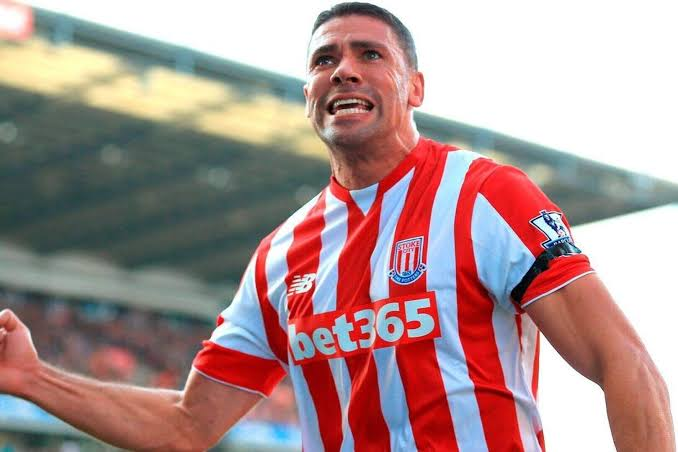

JWalt Fan Army members only.
A fan-run quiz club for the JWalt faithful.

Ten JWalt team-mates a day. Did each one score more or fewer Premier League goals in his career than JWalt? Think about where they played, in which era and for how long.